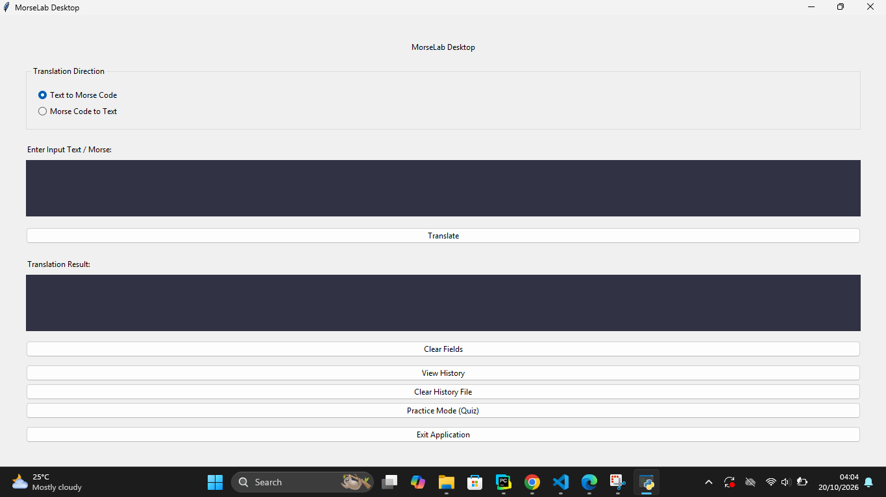
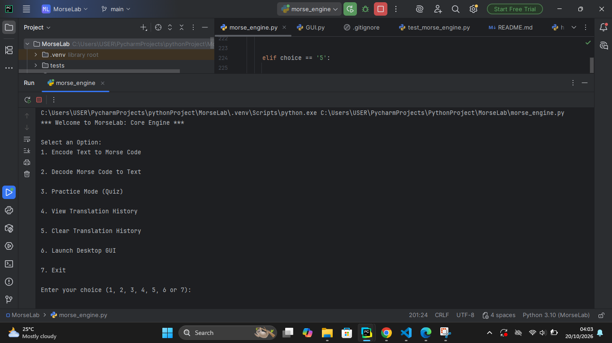

Morselab
A dual-mode Python application converting plain text to Morse code via terminal CLI and interactive Tkinter GUI.
01 · The Problem
Standard online text-to-Morse converters are often limited to single web interfaces without offline execution options or programmatic conversion logging. The goal of Morselab was to create a modular, zero-dependency Python conversion tool capable of running seamlessly across both command-line environments and a standalone desktop application interface.
02 · The Approach
To keep the application lightweight and cross-platform, Morselab relies strictly on standard library modules:
- Dictionary Mapping: Utilised Python dictionary lookup tables ($O(1)$ time complexity) for instant character-to-symbol translation.
- Tkinter GUI: Implemented responsive layout containers using `Frame`, `Label`, `Entry`, and `Button` widgets.
- Error Handling: Sanitised user inputs by filtering unrepresentable characters and normalizing strings to uppercase prior to translation.
03 · The Implementation
Morselab operates in dual modes: a standalone Tkinter graphical interface and a command-line terminal interface.


Below is the central dictionary configuration mapping character keys to Morse code string values:
MORSE_CODE_DICT = {
'A': '.-', 'B': '-...', 'C': '-.-.', 'D': '-..', 'E': '.',
'F': '..-.', 'G': '--.', 'H': '....', 'I': '..', 'J': '.---',
'K': '-.-', 'L': '.-..', 'M': '--', 'N': '-.', 'O': '---',
'P': '.--.', 'Q': '--.-', 'R': '.-.', 'S': '...', 'T': '-',
'U': '..-', 'V': '...-', 'W': '.--', 'X': '-..-', 'Y': '-.--',
'Z': '--..', '1': '.----', '2': '..---', '3': '...--',
'4': '....-', '5': '.....', '6': '-....', '7': '--...',
'8': '---..', '9': '----.', '0': '-----', ' ': '/'
}
def encrypt(message):
cipher = ''
for letter in message.upper():
if letter in MORSE_CODE_DICT:
cipher += MORSE_CODE_DICT[letter] + ' '
else:
cipher += '?'
return cipher04 · The Challenges
Handling word boundaries was an initial hurdle during construction. Standard character mapping merges words together if spacing is not explicitly delimited. To resolve this, space characters were assigned the forward slash (`/`) token within the mapping dictionary, preserving word separation during conversion and reverse parsing.
05 · The Limitations
In its current version, Morselab operates on static text translation. Planned enhancements for future iterations include:
- Audio synthesis output using Python's `winsound` or `pyaudio` to play live beep signals for dots (`.`) and dashes (`-`).
- Export functionality to save translated Morse code directly into `.txt` or `.json` files.